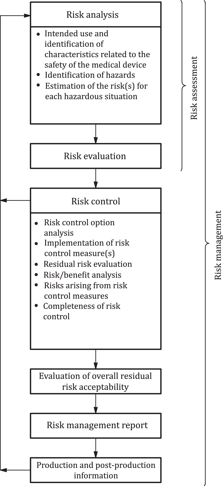

National foreword
This Published Document is the UK implementation of ISO/TR 15499:2016 .
It supersedes PD ISO/TR 15499:2012 which is withdrawn.
The UK participation in its preparation was entrusted to Technical Committee CH/194, Biological evaluation of medical devices.
A list of organizations represented on this committee can be obtained on request to its secretary.
This publication does not purport to include all the necessary provisions of a contract. Users are responsible for its correct application.
Compliance with a British Standard cannot confer immunity from legal obligations.
This Published Document was published under the authority of the Standards Policy and Strategy Committee on 31 January 2017.
Amendments/corrigenda issued since publication
| Date | Text affected |
|---|---|
Foreword
ISO (the International Organization for Standardization) is a worldwide federation of national standards bodies (ISO member bodies). The work of preparing International Standards is normally carried out through ISO technical committees. Each member body interested in a subject for which a technical committee has been established has the right to be represented on that committee. International organizations, governmental and non-governmental, in liaison with ISO, also take part in the work. ISO collaborates closely with the International Electrotechnical Commission (IEC) on all matters of electrotechnical standardization.
The procedures used to develop this document and those intended for its further maintenance are described in the ISO/IEC Directives, Part 1. In particular the different approval criteria needed for the different types of ISO documents should be noted. This document was drafted in accordance with the editorial rules of the ISO/IEC Directives, Part 2 (see www.iso.org/directives ).
Attention is drawn to the possibility that some of the elements of this document may be the subject of patent rights. ISO shall not be held responsible for identifying any or all such patent rights. Details of any patent rights identified during the development of the document will be in the Introduction and/or on the ISO list of patent declarations received (see www.iso.org/patents ).
Any trade name used in this document is information given for the convenience of users and does not constitute an endorsement.
For an explanation on the meaning of ISO specific terms and expressions related to conformity assessment, as well as information about ISO's adherence to the World Trade Organization (WTO) principles in the Technical Barriers to Trade (TBT) see the following URL: www.iso.org/iso/foreword.html .
The committee responsible for this document is ISO/TC 194, Biological and clinical evaluation of medical devices.
This second edition cancels and replaces the first edition ( ISO/TR 15499:2012 ), which has been technically revised with the following major changes:
definitions have been clarified;
risk evaluation and risk control have been substantiated;
compensation/adjustment of pH and osmolality has been substantiated.
Introduction
General
This document provides guidance on the conduct of biological evaluation of medical devices according to the requirements of ISO 10993‑1 . Although ISO 10993‑1 provides a general framework for biological evaluation of medical devices, more detailed guidance can be helpful in the practical application of the standard. As a result, this document was developed to provide such guidance to users of ISO 10993‑1 . This guidance can be used to better understand the requirements of ISO 10993‑1 and to illustrate some of the variety of methods and approaches available for meeting the requirements of ISO 10993‑1 .
Biological evaluation is a design verification activity which is set in the context of broader risk management processes. Therefore, this document includes guidance on the application of ISO 10993‑1 in the context of risk management processes conducted according to the requirements of ISO 14971 . This document describes concepts and methods that can be considered in establishing and maintaining a risk management process for biological evaluation as part of the overall evaluation and development of a medical device.
As scientific knowledge advances our understanding of the basic mechanisms of tissue responses, biological evaluation may be based upon review of relevant established scientific data and upon chemical analysis and in vitroand in vivotesting where these are required. ISO 10993‑1 specifies a framework in which to plan a biological evaluation which minimizes the number and exposure of test animals by giving preference to chemical constituent testing and in vitromodels in situations where these methods yield equally relevant information to that obtained from in vivomodels. The selection of which approach(es) are applicable to a particular medical device will depend on the nature of the device, the extent of available relevant scientific data and upon risk assessment.
When judging the applicability of the guidance in this document, applicable regulatory requirements and regulatory guidance should be considered.
An organization can voluntarily incorporate guidance from this document, wholly or in part, into its risk management process.
Guidance contained in this document can be useful as background information for those representing risk management process assessors, conformity assessment bodies and regulatory enforcement bodies.
Relationship with other standards, guidance documents and regulatory requirements
The relationship between ISO 10993‑1 , this document and the standards for biological evaluation of medical devices and general risk management is summarized as follows:
this document provides guidance on the application of ISO 10993‑1 ;
biological evaluation is a component of risk management and this document includes guidance on the application of ISO 14971 to the conduct of biological evaluation.
1 Scope
This document is applicable to the conduct of biological evaluation of medical devices according to the requirements of ISO 10993‑1 . It does not add to, or otherwise change, the requirements of ISO 10993‑1 . This document does not include requirements to be used as the basis of regulatory inspection or certification assessment activities.
This guidance is applicable to all biological evaluation of all types of medical devices including active, non-active, implantable and non-implantable medical devices.
2 Normative references
There are no normative references in this document.
3 Terms and definitions
For the purposes of this document, the terms and definitions given in ISO 10993‑1 and the following apply.
ISO and IEC maintain terminological databases for use in standardization at the following addresses:
IEC Electropedia: available at http://www.electropedia.org/
ISO Online browsing platform: available at http://www.iso.org/obp
3.1
3.2
3.3
3.4
3.5
3.6
3.7
3.8
3.9
4 Biological evaluation as a risk management practice
4.1 General
ISO 10993‑1:2009, B.2.2.2 describes a continuous process by which a manufacturer can identify the biological hazards associated with medical devices, estimate and evaluate the risks, control these risks, and monitor the effectiveness of the control. Appropriate protection of the patient by weighing risks and benefits of medical devices is an essential element of this biological evaluation plan. Benefit to the patient from the use of medical devices entails the acceptance of potential risks. These risks will vary depending on the nature and intended use of the specific medical device. The level of risk which is acceptable for a specific device will depend upon the expected benefit provided by its use.
Consideration of biological risk is only one aspect of the risk assessment of a medical device, which should consider all aspects of risk. In some cases, it can be specifically necessary to consider the relative benefits of materials of different biological safety profiles in the context of some other characteristic. For example, it can be possible that the most biologically safe material available can have unacceptable mechanical strength, in which case, it would be necessary to consider if an alternate stronger material is of acceptable biological safety . It is fundamental to the conduct of biological evaluation that it be undertaken as part of the overall risk management process required in the design and development of the medical device.
Material selection and risk analysis are integral components of the design process for medical devices. The selection of materials plays a crucial role in evaluating the biological safety and, when approached in a systematic way, allows the collection of relevant data. In line with ISO 13485 and ISO 14971 , criteria to define the acceptable biological risk should be established at the start of the design process. Because starting material, formulation and processing variations could impact final product biocompatibility , these considerations should also be incorporated into the risk assessment . The biological safety evaluation should be designed and performed to demonstrate the achievement of specified criteria for safety. This evaluation is a component of the risk management plan encompassing identification of all hazards and the estimation of associated risks. Adequate risk assessment requires characterization of toxicological hazards and exposures.
A major component in hazard identification is material characterization. The following steps can be identified:
define and characterize each material, including suitable alternative materials;
identify hazards in materials, additives, processing aids, etc.;
identify the potential effect of downstream processing (e.g. chemical interactions between material components or final product sterilization) on chemicals present in final product;
identify the chemicals that could be released during product use (e.g. intermediate or final degradation products from a degradable implant);
estimate exposure (total or clinically available amounts);
review toxicology and other biological safety data (published/available).
Information on biological safety to be reviewed can include:
toxicology data on relevant component materials/compounds;
information on prior use of relevant component materials/compounds;
data from biological safety tests.
The risks posed by the identified hazards should then be evaluated. At this stage, it should be possible to determine whether there is an undue toxicological risk from the material.
If it can be concluded from existing data that risks are acceptable, then no additional toxicity testing is needed. Testing is also unwarranted if risks are found to be unacceptable. When existing data are insufficient, additional information should be obtained. The purpose of testing is to obtain additional data which can assist in reaching a conclusion. A rationale for testing should therefore be based on an analysis of the relevant risks which are indicated from the existing data.
The results of any tests should be assessed. Test reports should include descriptive evidence, an assessment of the findings and qualitative assessment of their acceptability.
The assessor should determine if the available information is sufficient to meet the purpose of the evaluation of biological safety and if so, document how the conclusion on safety was reached including the rationale for any decisions and the impact of test results and other information on the assessment.
The evaluation indicates the identity and significance of all relevant evidence and highlights the scientific basis of the overall conclusions in an accurate, clear and transparent manner. It is very important that the factors leading to the conclusion are fully discussed with succinct and accurate rationales for each judgment and identification and discussion of any uncertainties underlying each decision.
The components of risk management are summarized in Figure 1(taken from ISO 14971 ). The different elements of a biological evaluation process can be considered in terms of the elements of the overall risk management process.
In summary, biological evaluation should be seen as an element of risk management practice and therefore, the conduct of a biological evaluation of a medical device should aim to meet both the requirements of ISO 10993‑1 and ISO 14971 .
4.2 The biological evaluation plan
ISO 14971:2007, 3.4 requires that risk management activities be planned in advance. Since biological evaluation is a risk management activity, a Biological Evaluation Plan is required, and this forms part of the Risk Management Plan. It is emphasized that simply planning to conduct testing against all of the aspects of toxicology identified in ISO 10993‑1:2009, Table A.1 does not meet the requirements of ISO 14971 or ISO 10993‑1 . The biological evaluation plan should be drawn up by a knowledgeable and experienced team and include as a minimum:
arrangements for gathering of applicable information from the published literature (including information sources and search strategies), in-house and supplier data and other sources in order to conduct risk analysis ;
arrangements for conducting the evaluation, including the requirement for any specific technical competencies relevant to the specific device application;
arrangements for review and approval of the plan as part of the overall design control process;
arrangements for review of the final conclusions of the evaluation and the approval of any additional testing programme required;
arrangements for the final review and approval of the outcomes of the biological risk assessment, including the risk control measures applied and the documentation of any residual risks and the disclosure of residual risks through means such as product labelling.

5 Guidance on risk management
5.1 Risk assessment
5.1.1 Introduction
Risk assessment is the combination of the processes of risk analysis in which risks are identified and estimated and risk evaluation in which risks are evaluated to identify those which require mitigation (risk control).
5.1.2 Risk analysis
Risk analysis is the process of identifying the specific hazards and assessing their significance. In a biological evaluation, this equates to consideration of the potential toxicity of materials components and their route of exposure. Risk analysis should be methodically conducted by means of estimation of risks from each material/component for each route of exposure and toxicological effect.
Risk analysis therefore begins with identification and characterization of the indirect and direct patient-contacting materials and components of the device. This should be done based on the final form of the device in its manufactured state, taking into account the presence of any manufacturing additives, processing aids or other potential contaminants such as sterilant residues. Effects of processing on materials composition and chemistry (including both bulk and surface effects) should also be considered. In particular, where reactive or hazardous ingredients have been used in, or can be formed by, the production, processing, storage or degradation of a material, the possibility of the presence of toxic residues should be considered. The potential for interactions with or introduction of contaminants from packaging materials should also be considered.
Physical and chemical material properties are relevant to biological safety and will need to be identified at this stage. These can include one or more of the following:
wear, load, fatigue, e.g. especially in load-bearing devices such as total joint prostheses and the associated production of particulates or materials degradation;
friction and associated irritation, e.g. in applications such as catheters;
interactions between material combinations (chemical interactions), e.g. different flexibility, galvanic corrosion, abrasion;
heat (e.g. thermal degradation or other thermally induced material changes);
manufacturing processes, e.g. internal stresses produced can promote environmental stress cracking (ESC), morphological changes, or degradation;
environmental interactions, e.g. endoscope (stomach acids), dressings (external environment), UV-light, detergents, decontamination and sterilization processes;
electricity, e.g. short circuits, degradation, heating, muscle stimulation;
potential interactions between components;
effect of physical form, e.g. particulates.
Materials information can be obtained through review of literature, vendor data, in-house data or comparison with existing products on the market where the manufacturing processes and formulations are known and the same as in the device under evaluation.
ISO 10993‑1:2009, Annex C provides guidance on conduct of literature review.
This initial characterization is then followed by consideration of the toxicology of the known material components. This specific nature of the toxic effect(s) and the dose-response relationship should be considered.
The range of toxicological effects is wide. ISO 10993‑1:2009, Clause 5 and Table A.1 provide guidance to relevant toxic effects for different exposure routes and durations.
Because materials with sub-micron components (i.e. nanomaterials) have been shown, in many cases, to behave differently than the same materials at larger scales, extrapolation of data from larger sized materials may not be appropriate.
5.1.3 Risk estimation
Risk estimation, in addition to consideration of the toxicology of identified materials components, also includes consideration of the anticipated exposure, e.g. the availability of leachable or soluble components (see ISO 10993‑17 ).
Risk is typically estimated by assigning values to the probability of occurrence of harm and the severity of that harm. In general toxicological terms, likelihood can be estimated from knowledge of the actual availability of toxic components and the known dose response in relevant tissue(s). The severity can be assessed in terms of the nature of the toxic response.
If insufficient information is available from published literature, in-house data and documented track record of the subject materials, risk estimation can require conduct of chemical characterization or biological testing to estimate or quantify the hazards which cannot be satisfactorily determined from this prior knowledge. ISO 10993‑7 , ISO 10993‑13 , ISO 10993‑14 , ISO 10993‑15 , ISO 10993‑16 , ISO 10993‑17 , ISO 10993‑18 and ISO/TS 10993‑19 address various aspects of materials characterization. Where consideration is given to the conduct of toxicological investigations for the purposes of hazard identification or risk estimation, appropriate studies should be selected following the guidance in ISO 10993‑1 and other applicable parts of the ISO 10993 series.
Test selections for risk estimation purposes can only be determined after the completion of the review of existing knowledge, as the tests should be specifically selected to address the deficiencies in knowledge identified in the review.
The amount of data required for risk analysis and the depth of the analysis will vary with the intended use and are dependent upon the nature and duration of patient contact. Data requirements are usually less stringent for materials with indirect patient contact, medical devices contacting only intact skin, and any component of a medical device that does not come into direct contact with body tissues, infusible liquids, mucous membranes or compromised skin.
5.1.4 Risk evaluation
Risk evaluation builds upon the risk analysis , taking the next step of evaluating the risks defined in the risk analysis for their significance and identifying requirements and opportunities for mitigation (risk control). It should be realized that for a full evaluation, the whole medical device should be taken into consideration including all its components.
Biocompatibility can only be demonstrated for a particular material in relation to a defined set of circumstances, which include the purpose for which it is used and the tissues with which it comes into contact. For example, the consideration of toxicology of extractable/leachable chemicals should be undertaken in context of the routes and duration of exposure and implications for actual availability of potential toxicants. Of particular importance is consideration of any history of clinical use or human exposure data from relevant similar applications. For example, clinical studies showing a final product is non-irritant might be useful in justifying omission of animal irritation studies. However, clinical studies of a general implant material might not be sufficient to justify omission of a final product implant study, as the combination of materials might result in an adverse biological effect.
It is critical for the integrity of a biological risk evaluation that it should be conducted by assessors with the necessary knowledge and expertise to determine the appropriate strategy for the evaluation and ability to make a rigorous assessment of the available data and to make sound judgments on the requirements for any additional testing (see ISO 10993‑1:2009, Clause 7 ).
5.1.5 Risk control
Risk control is the process of identifying and implementing measures to reduce risks. In the context of biological safety , this can involve activities such as consideration of options for design changes. Examples of possible strategies include:
design changes to avoid more hazardous exposure routes or reduce exposure time;
reduction of toxicity by means of reformulation or materials change;
changes to production processes to reduce or eliminate hazardous residues or process additives.
Risk can also be controlled by providing data to allow a more accurate risk estimate than one based on worst case default assumptions. The choice of tests should be based on an initial risk analysis that identifies the uncertainties that need to be addressed and the most suitable way of addressing them. In some cases, an identified risk for which there is some uncertainty can be mitigated by means other than testing (e.g. warnings, contraindications).
It is emphasized that conducting animal toxicity testing for risk reduction should only be considered after all alternative courses of action (review of prior knowledge, chemical characterization, in vitroevaluations or alternative means of mitigation) have been exhausted.
5.2 Evaluation of residual risk acceptability
Following risk analysis and evaluation and the implementation of risk controls, it is necessary to review the findings of these preceding activities and to document the residual risk and to decide on any further disclosure of such residual risks, for example, through appropriate labelling, cautions or warnings.
5.3 Post production monitoring
The processes of risk assessment are based upon human judgement using the available information, supplemented by biological testing where required. This assessment should be updated as needed with new information that becomes available from post-market monitoring of device performance and safety in actual clinical use. This monitoring should include both trends in adverse events associated with the specific device in question, plus new information which arises in relation to other relevant similar devices or materials. Monitoring should also include ongoing review of relevant scientific literature.
6 Guidance on specific aspects of biological evaluation
6.1 Material characterization
6.1.1 Chemical characterization
From a practical perspective, chemical characterization data are most useful in a biological assessment when:
there are no issues regarding the proprietary nature of the material;
only one or a small number of chemical constituents are changed in a device;
toxicity data are readily available on the compound(s);
extraction/analytical chemistry studies are easily conducted.
6.1.2 Use of chemical characterization data in a biological evaluation
There are several clauses/subclauses in ISO 10993‑1:2009 that ask the user to conduct a chemical characterization of the device undergoing the biological evaluation. For example, 4.3 instructs the user to take into account the intended additives, process contaminants, residues, and leachable substances for their relevance to the overall biological evaluation of the device. However, as a practical matter, no specific guidance is given on how to take this information into account when performing the biological evaluation.
From a hazard identification standpoint, information on the compounds released from the device can be useful in selecting appropriate biological evaluation tests. For example, if a compound is known to produce nephrotoxic effects, special attention could be paid to that end point when conducting either acute or subchronic toxicity tests as described in ISO 10993‑11 . Such information can be used to focus the biological testing strategy to address the most clinically relevant end points.
Chemical characterization data can also be useful for risk characterization. If data are available on the rate at which a compound is released from the device under conditions that simulate the in-use environment, and if sufficient data are available to derive a Tolerable Intake (TI) value for that compound using the method outlined in ISO 10993‑17 , then it is possible to compare the dose of the compound received by the patient to the TI or “safe” dose to assess the likelihood that adverse effects can occur. To employ this approach, data are not only needed on the identity of the compounds released from the device, but also on the rate at which they are released under clinically relevant conditions.
ISO 10993‑9 , ISO 10993‑12 , ISO 10993‑13 , ISO 10993‑14 , ISO 10993‑15 , ISO 10993‑18 and ISO/TS 10993‑19 are relevant to material characterization.
6.1.3 Proprietary materials formulations
Where the necessary data (e.g. complete formulation data) are not available to a manufacturer because of confidentiality of proprietary information, enquiries should be made with the materials supplier as to the availability of materials biological evaluations which can be relevant to the proposed application. In some cases, it is possible to manage confidentiality of proprietary formulations by means of separate lodgement by the manufacturer of biological evaluation data with an independent assessor or regulatory agency (known as a “Master File” in some jurisdictions). These data can then be referenced in a regulatory submission by the device manufacturer and confidentially reviewed by the conformity assessment body or regulatory agency in conjunction with the device submission review.
6.1.4 Effects of manufacturing processes
It is important to consider the effect of manufacturing conditions on materials as well as the use of additives or presence of contaminants. In general, in order to be able to support biological safety , materials testing should have been carried out on materials test samples which have been processed (including sterilization, if applicable) in equivalent ways to the materials included in the final device in question. Where there are differences in the materials processing from that used to produce test articles to generate the test data, a justification is required as to why the differences are not significant to the determination of biological safety . Particular aspects which should be considered include the following:
processes which can cause either bulk or surface changes in materials properties, e.g. moulding, surface treatment, welding or machining;
intended additives, e.g. colorants, lubricants, pigments, surface treatments, ink;
potential process contaminants, e.g. cleaning/disinfection/sterilization agents, etching agents, mould release agents, cutting fluids and particles, machine contaminants such as lubricants;
degradation during manufacturing and processing, clinical use and storage;
potential process residuals of chemicals and additives.
6.2 Biological evaluation
6.2.1 Determining the acceptability of the level of leachable (allowable limit) according to ISO 10993‑17
As noted in ISO 10993‑17 , risk characterization involves a comparison of the dose of the compound received by the patient to the “safe” dose or Tolerable Intake (TI) value for that compound. If dose/TI ratio is >1, then there is an increased likelihood for adverse effects to occur in the exposed patient. However, the dose/TI ratio should not be thought of as a “bright line” value to determine the acceptability of the level of the leachate. The greater the value of the dose/TI ratio, the greater the likelihood is of adverse effects occurring in the patient; however, it is important to also take into consideration such factors as severity of adverse effects seen in the study that serves as the basis for the TI, the pharmacokinetics of the compound, the conditions used to extract the compounds from the device, and whether default or conservative assumptions were used to derive the TI. In addition, information on the clinical use of the device and availability of alternative materials should be taken into account when assessing whether the level of a compound leached from a device is acceptable.
6.2.2 pH and osmolality compensation for absorbable materials
Polymeric, metallic, or ceramic materials that are intended to absorb in vivorelease soluble components or degradation products. If the release rate of a material is sufficiently rapid, elevated concentrations of one or more of the released products could alter the pH and/or osmolality of an in vitrotest system. Since the in vivocondition provides the combined presence of perfusion and carbonate equilibria when evaluating intentionally absorbable materials, it may be necessary to adjust the pH and/or osmolality of an in vitrotest system to maintain physiologically relevant conditions — thereby allowing evaluation for other causation and providing a scientific justification for the adjustments and the effect on the in vitrotest system is documented within the report.
6.3 Device testing considerations
6.3.1 Tiered approaches to biological testing
When it is found to be necessary to conduct additional testing to gather further data to support a risk evaluation , then a tiered approach should be taken. Testing should begin with chemical characterization and in vitroscreens. The results of the characterization and in vitrotesting should be reviewed before proceeding to animal toxicity testing.
6.3.2 When to do long-term testing (chronic toxicity, reproductive toxicity, biodegradation and carcinogenicity studies)
The need to conduct or not long-term testing requires specific consideration and justification according to the application being considered.
In the following circumstances, a correctly conducted risk assessment can provide justification for not carrying out long-term testing, where:
the mass of the device is very small;
the materials produce very low levels of extractables 1(see 6.4.1);
the duration of exposure is short;
the materials are well characterized with a history of safe clinical use in equivalent applications, then long-term toxicology is unlikely to be of concern.
The following situations are likely to indicate a need for long-term testing:
the quantity of material present and the length of exposure indicate that long-term toxicological effects could be of concern;
constituent compounds are known to be, or considered likely to be, toxic;
there are insufficient prior data for the material concerned (or closely similar materials) in equivalent long-term applications;
there are specific chemical reasons, e.g. particular molecular structures of concern, which indicate particular chronic toxicological concerns;
shorter term screens, e.g. in vitrogenotoxicity screens indicate potential for concern;
there are known concerns regarding biostability for the particular class of material of interest and there are insufficient supporting data, e.g. accelerated test data from a relevant, validated model for the specific material or formulation under consideration.
It should be noted that there are some controversial test choices in the area of long-term testing and some international differences in testing requirements.
6.4 Biological safety assessment
6.4.1 Thresholds of Toxicological Concern (TTC)
When considering the presence in a material of potentially toxic components which are present at low concentrations, consideration should be given to the concept of a “threshold of toxicological concern”. It is possible to establish by reference to the known toxic effects of the substance in question, in particular the toxic dose, that the substance is present in sufficiently low amounts to not present a significant risk.
6.4.2 What constitutes sufficient justification and/or clinically relevant data for a risk assessment
If it is determined in the biological evaluation that the device does not have the same chemical composition and body contact as an existing device, ISO 10993‑1:2009, Figure 1 instructs the user to determine if there is sufficient justification and/or clinically relevant data (chemical and biological) for a risk assessment .
Sufficient justification for a risk assessment can be based on several factors, including whether all materials used in the device have a long history of safe use for this application. If such data exist, then sufficient justification can exist to undertake a chemical characterization- risk assessment approach to assess biological safety . However, it is important to point out that the materials should be chemically identical to those used in existing devices and that the nature of exposure be the same for this justification to be used.
6.4.3 Guidance on mixtures in risk assessment
ISO 10993‑17 notes that patients are rarely exposed to only one residue at a time. It is more likely that exposure occurs to multiple compounds released from the device. This co-exposure to multiple compounds has the potential to increase or decrease the toxicity of a constituent of the mixture if this compound was administered alone.
ISO 10993‑1:2009, Figure 1 asks the user to consider if the toxicity data for individual compounds are applicable if the patient is exposed to this compound as part of a chemical mixture. Data are rarely available on the effect of a compound as a constituent of a chemical mixture and this requirement places a very high standard on the use of toxicity data for single compounds for the biological evaluation of medical devices. However, when the rate at which compounds are released from a medical device is well below the respective TI value for these compounds, and the compounds are not structurally similar, then the likelihood of interactive toxicological effects occurring among the mixture constituents is small. In addition, compounds could chemically interact, resulting in new chemicals that could introduce similar or new types of toxicological risks . Methods to address risk assessment of mixtures are given in ISO 10993‑17, Annex B .
6.4.4 What constitutes “sufficient toxicology data” including dose and route relevance
Although it is possible to identify a number of chemical compounds released from a device in a chemical characterization scheme, it is likely that toxicity data will not be available for some compounds by the clinically relevant route of exposure.
Although methods are available to conduct a route-to-route extrapolation of dose, including PBPK modelling as described in ISO 10993‑1:2009, 6.2.2.14 , these approaches should be used with caution and portal-of-entry effects should be taken into consideration.
Caution is required in interpreting effects observed in tests at very high dose levels relative to the actual exposure in clinical use. Similarly, sample concentration within an in vitrotest system may require adjustment to ensure that the test system is representative of physiological conditions, especially when assessing absorbable materials (see 6.2.2for guidance on pH and osmolality compensation for absorbable materials).
Various factors that should be considered to extrapolate animal experiment data to clinical use conditions are discussed in ISO 10993‑17 .
6.4.5 What to include in the biological safety assessment report
Documentation for a biological safety assessment should include, to the extent feasible and necessary, the following:
a general description or drawing of the device;
quantitative information on the material composition and/or formulations for all materials in contact with tissue or infusible fluid;
a review of available toxicity and prior use data for each relevant material and chemical in contact with tissue or infusible fluid;
reports of biological safety tests;
an assessment of the data.
The information collected should be incorporated in the device design documentation as part of the process of design control (see ISO 13485:2016Clause 7 ). It should also form part of the risk management file (see ISO 14971:2007, 2.23 ). Pre-clinical and clinical studies are an aspect of design verification and validation (see ISO 13485:2016, 7.3.5 and 7.3.6, respectively). A product design dossier compliant with ISO 13485 design controls will include clearly specified design input requirements (including requirements for biological safety ) and records of pre-clinical tests, clinical investigations, and design reviews that verify that the device as designed meets these requirements.
6.5 General guidance
6.5.1 Changes which can require re-evaluation of biological safety
Conventional medical device design practices require that a risk assessment be revisited when a design change occurs. If the design is modified, changes made on the device could alter the biological performance of the device. It is therefore important to evaluate the effect of a change. The biological risks associated with a change should be identified, evaluated, assessed and controlled. Testing is unwarranted if risks are found to be unacceptable. Otherwise, additional information should be obtained. Tests should only be undertaken if they are judged likely to assist in reaching a conclusion. A rationale for testing should therefore be based on an analysis of the relevant risks from the existing data.
It is important to understand that although material changes do trigger the need for re-evaluation, the scope of that re-evaluation should be appropriate to the nature of the change and should focus on the specific materials changed, the nature and use of the device and the potential interactions.
If tests are considered necessary, a tiered approach should be used as for original testing, with the sequential conduct and review of material characterization, followed by in vitrotesting, followed by animal toxicity testing only if the materials characterization or in vitrotests do not provide sufficient information.
Typical changes that could alter the biological performance of a material or final device include, but are not limited to:
processing, e.g. sterilization, cleaning, surface treatment, welding, injection moulding, machining, primary packaging;
material source, e.g. new vendor, new facility;
material specification, e.g. wider tolerances, new specification;
formulation, e.g. new materials, new additives, change in tolerances;
storage conditions, e.g. longer shelf-life, wider tolerances, new transportation conditions;
biological environment (i.e. change in clinical use).
Properties to consider following a material change include, but are not limited to:
chemical composition, e.g. composition, purity, leachable profile;
physical properties, e.g. morphology, topography;
mechanical properties, e.g. wear resistance, strength;
biostability, environmental stability and chemical stability;
biological effects of electrical properties and EMC.
Chemical characterization data are used in risk assessment to judge equivalency, in toxicological terms, of a proposed material to an existing clinically established material for the same type of clinical exposure. Principles for judging toxicological equivalency are described in ISO 10993‑18:2005, Annex C.
6.5.2 Good laboratory practice
Biological safety assessment is expected to be an integral part of a manufacturer’s quality management system and is therefore subject to the same requirements for validation and traceability as any quality control test. Assurance is needed that the conclusions about safety upon which development and marketing decisions are based are well founded. A safety assessment is only as good as the data supporting it. It is necessary therefore to verify the scientific integrity of all components of an assessment. Quality systems controls applicable to pre-clinical testing are known as Good Laboratory Practice (GLP). GLP studies are carried out to define quality standards in laboratories that are accredited in line with an internationally implemented governmental scheme. Typically, studies will be conducted under a laboratory quality system compliant to ISO/IEC 17025 or an equivalent standard.